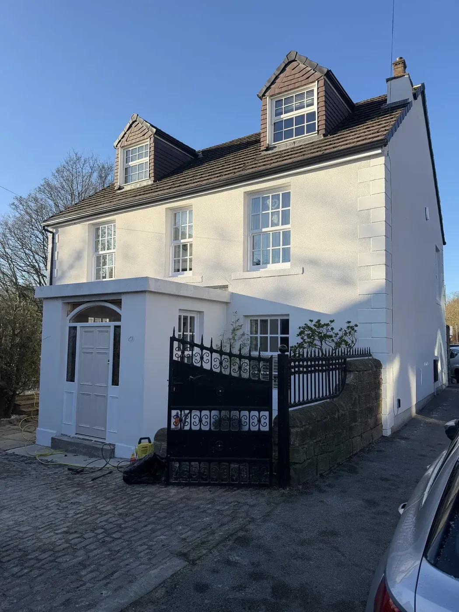
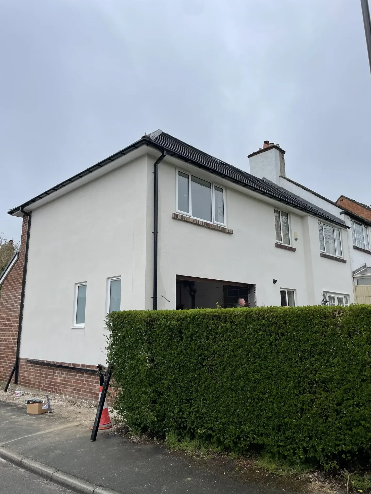
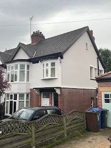
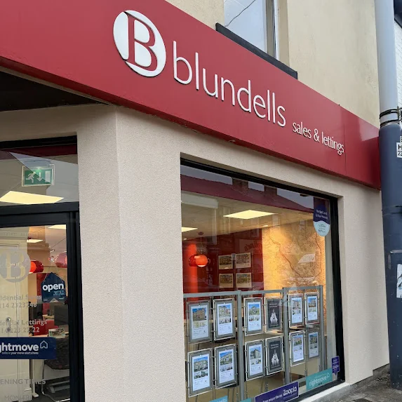

Render Repair Sheffield — Crack Repair, Patching & Repointing | P&R Solutions
Cracking, bulging, or falling off? We find the root cause — then fix it permanently. Free site survey, fully itemised quote, zero deposit.
Diagnose First. Fix it right.

Stannington, S6 — old failing render stripped and replaced by P&R Solutions
Render fails for specific, diagnosable reasons. Plastering over the problem without addressing the cause means it will fail again. Here's what we look for.
Get a Survey ↗Sheffield's winters subject render to hundreds of freeze-thaw cycles each year. Water enters hairline cracks, expands as it freezes, and forces the cracks wider. Over time, render debonds from the substrate, bulges, and eventually falls away. This is the most common cause of render failure on Sheffield properties — and it's entirely preventable with a modern flexible system.
A render mix that's too rich in cement cures rigid and brittle. A coat applied too thick cracks as it dries and shrinks. Render applied to a dry wall on a hot day loses moisture too quickly and never cures properly. These are application errors — they cause the render to fail regardless of conditions, often within the first few years.
Render applied to a dusty, painted, contaminated, or smooth non-absorbent surface will never bond properly. It may look fine for a year or two, but the bond is mechanically weak. Any movement or water ingress causes delamination. The fix requires stripping to sound masonry and preparing the substrate correctly before any new render is applied.
Applying new render over hollow or failing sections is one of the most common mistakes — and the most expensive one for homeowners. The new render bonds to the old failed layer, not to the wall. Within a short time, the whole section fails again. We never render over failing substrate. Everything unsound comes off first.
Older Sheffield properties — particularly pre-1960s brick — can suffer sulfate attack, where soluble sulfates in the masonry or old mortar react with the cement in the render, causing it to swell and crack. Once identified, this requires a sulfate-resistant render mix and substrate treatment to prevent recurrence. Standard re-rendering without treatment will fail again within a few years.

Every render repair and re-render we carry out comes with our full 5-year workmanship guarantee, on top of any manufacturer product warranty. Zero deposit — you pay nothing until you're satisfied with the work.
A Permanent Repair. Not a patch-up.
Free Site Survey & Diagnosis
We attend and inspect — tapping for hollow sections, checking for damp and cracks. The root cause is identified before any work begins. No guesswork.
Strip All Failing Render
Every hollow, cracked, or detached section is cut out back to sound masonry. We never render over failing sections — that guarantees the problem returns.
Treat the Substrate
Exposed masonry is treated as required — salt neutraliser, anti-efflorescence primer, or bonding agent. This step prevents the failure recurring.
Reinforced Base Coat
Fibre-reinforced polymer-modified base coat applied to all repaired areas, with alkali-resistant mesh at joints and edges — bridges the old/new interface and prevents future cracking.
Matched Topcoat Applied
Colour-matched topcoat for partial repairs, or a premium silicone or monocouche finish across the whole elevation for full re-renders — seamless, weatherproof, guaranteed.
Final Inspection & Sign-Off
Full inspection before leaving site. You inspect the work. Pay only when you're 100% satisfied. Every repair covered by our 5-year workmanship guarantee.
Re-renders Across Sheffield & South Yorkshire.

Fulwood, S10
Detached property — full re-render
Full strip of cracking original render back to masonry. Alkali-resistant mesh base coat, premium silicone finish — self-cleaning and crack-proof for 25+ years.
Request Similar ↗
Millhouses, S7
Semi-detached property — re-render
Hollow and cracking render stripped to sound substrate, mesh reinforcement applied throughout. Silicone topcoat — breathable, weatherproof, and maintenance-free.
Request Similar ↗
Hillsborough, S6
Terraced property — full re-render
Old cement render — too rigid for Sheffield's freeze-thaw cycles — stripped and replaced. Ecorend silicone system with full mesh reinforcement. 25-year warranty.
Request Similar ↗
Wentworth, S62
Period property — full re-render
Complete render replacement on a period property. Substrate treated and primed before a full silicone system — flexible, breathable, and matched to the property's character.
Request Similar ↗
Sheffield, S10
Detached property — re-render
Severely cracked and delaminating render — stripped to bare masonry, substrate treated, full K Rend silicone system applied. Self-cleaning, colour-fast finish.
Request Similar ↗Transparent Pricing
Every job is priced individually after a free site survey. The ranges below give you a clear starting point — no surprises, fully itemised quote every time.
- ✓ Isolated hollow or cracked sections
- ✓ Strip to masonry, mesh reinforcement
- ✓ Colour-matched topcoat
- ✓ 5-year workmanship guarantee
- ✓ Full strip of all failing render
- ✓ Substrate treatment included
- ✓ Silicone or monocouche finish
- ✓ Scaffold included in quote
- ✓ 25-yr manufacturer warranty
- ✓ Full strip of all failing render
- ✓ Substrate treatment included
- ✓ Premium silicone finish
- ✓ Scaffold included in quote
- ✓ 25-yr manufacturer warranty
All prices are indicative ranges. Final price confirmed at free site survey. Zero deposit — pay on completion.
Render Repair Questions
Straight answers to what Sheffield homeowners ask us most.
The most common causes in Sheffield are freeze-thaw movement — water penetrates hairline cracks, freezes, expands, and widens them — failure of the original render mix (too rich in cement makes it rigid and brittle), poor substrate preparation, or render applied over a failing previous coat. We diagnose the exact cause at the free site survey before any work begins.
It depends on the extent and cause of the failure. If only isolated sections are hollow or cracked and the rest is well-bonded, a targeted patch repair is right. If more than 40–50% is failing, or the root cause is widespread water ingress or movement, a full re-render is more cost-effective long-term. We'll give you an honest assessment at the free site survey — we don't up-sell re-renders when a repair is the right call.
Patch repairs on a single elevation typically cost £800–£2,500 depending on the extent and access. A full re-render of a semi-detached property ranges from £4,500–£7,000; a detached property £7,500–£12,000 including scaffold. We provide a fully itemised quote after a free site survey. Zero deposit — you pay nothing until the work is complete and you're satisfied.
A hollow sound means the render has debonded from the substrate — it is no longer attached to the wall behind it. This is caused by water getting behind the render, freeze-thaw expansion, or the original render being applied to an unprepared surface. Hollow render will eventually fall off and can cause injury or damage. It needs to be stripped and re-rendered — it cannot be fixed by filling or painting over.
We colour-match as closely as possible for partial repairs, but a perfect invisible match is rarely achievable on old sand-and-cement render that has weathered over the years. We're honest about this at the survey. For properties with widespread patchy repairs, a full re-render in premium silicone is often the more cost-effective and visually superior solution — and the price difference is smaller than most people expect.
Yes, it can. Cracked or hollow render allows rainwater to penetrate behind the coat and into the masonry. Over time this causes internal damp patches, mould growth, and deterioration of the wall structure. Sheffield's high annual rainfall makes this particularly common. Addressing the render failure resolves the source — treating the damp internally while leaving failed render in place is treating the symptom, not the cause.
A repair carried out to the correct standard — stripping to sound render, treating the substrate, reinforced base coat, matched topcoat — will last 15–25+ years. A repair that just fills the crack or renders over a failing section will fail again, usually within 1–3 years. Every repair we carry out comes with our 5-year workmanship guarantee.
We can carry out render repair in most conditions, but we won't apply render in temperatures below 5°C or if frost is forecast within 24 hours. Cold temperatures prevent proper curing and compromise the bond. We'll advise on timing at the free site survey and give you a realistic programme for the season.
For work above first-floor level, yes — scaffolding is required for safe working. We organise scaffold and include the cost in our quote. For ground-floor or low-level repairs, towers or hop-ups are often sufficient. Everything is included in your itemised quote — no surprises.
The key factors are: what percentage of the render is failing, what caused the failure, and the age and condition of the existing system. If isolated areas have failed and the rest is well-bonded with no widespread damp or movement, a repair is right. If the render is old, failing in multiple areas, or was originally poorly applied, a full re-render in silicone gives you a guaranteed system for the next 25 years. We'll tell you plainly which is appropriate at the free site survey.
The gold standard upgrade after a repair. Self-cleaning, crack-proof, 25-year warranty.
Through-coloured one-coat cement render. Durable, low-maintenance, mid-tier option.
Insulate and re-clad in one operation. Ideal where significant heat loss and failing render coincide.

Worried About Your Render? Let's fix it.
Free site survey. Honest diagnosis. Fully itemised quote. Zero deposit — you pay only when the work is complete and you're satisfied.